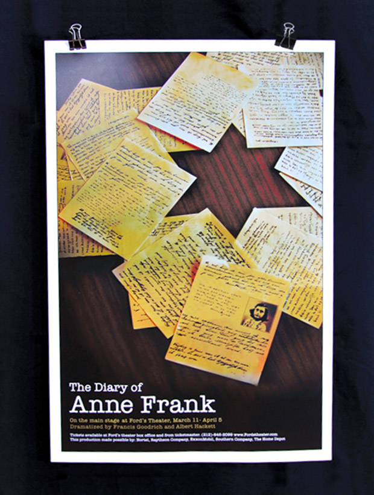
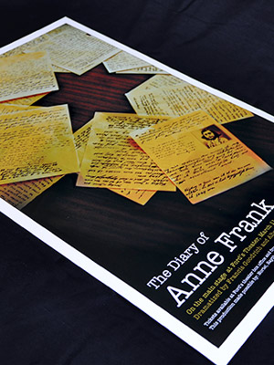

back to portfolio

The Diary
of Anne Frank
Theater Poster
The Diary of Anne Frank
is such a well-known and powerful story. The imagery in this design was used to represent the overall story and mood, while being conceptual and impactful

Previous Project
Next Project